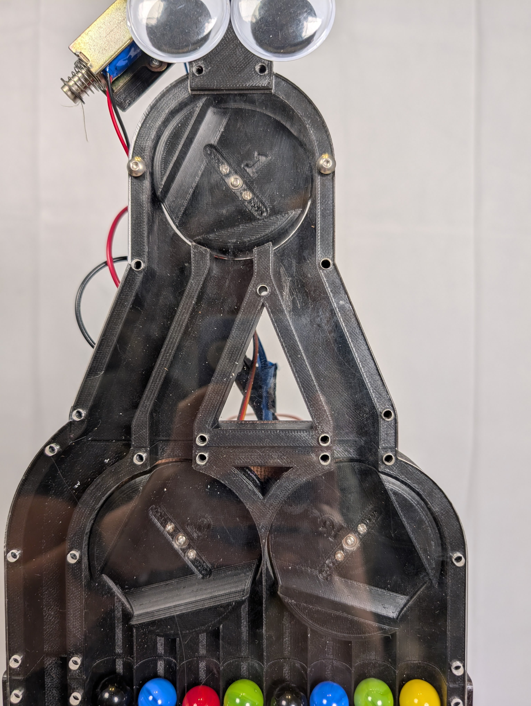

Designing pixel images, one sorted marble at a time.
.jpg)
.jpg)
After selecting an image, marbles will begin to make their journey. First, marbles start in a basin where they are picked up by a screw and pushed up through a tube and to the marble pathway.

In the marble pathway, the marbles are color-sensed and are hit by a solenoid into a sorting mechanism. This sorting mechanism determines if that marble is needed as the next marble color in any columns; if so, the marble will be sorted into that column, if not, the marble will be discarded as trash.
Eventually through enough marble sorting an image is created! Once the picture is done, the marbles are released from the frame and a new image can be selected or drawn.
Thank you to everyone who made this project possible
Thanks to the Fall 2024 PIE Teaching Team, Professors Amon Milner, Georgia Van de Zande, Kene Mbanisi, Andrea Cuadra, and all the CA's. We also want to shout out the Olin Shop Staff for bein incredibly helpful and resourceful. We also want to credit Engineezy for the inspiration for this project.